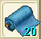

画像
布画像

座標→�ｺ威特島(147,348)

剪取
布は買うこともできますが、台湾版ではＮＰＣの値段が高くなっていて
プレイヤースキルで採取することもできるようです。
紡織工の採取スキルのことを「剪取」というようです。
| 採取時の 画像 |
織った後 布画像 |
日本の布名 | とれる場所 | ||
| 台湾での名前 | |||||
| R1 | 麻 | ファンブルグ東門を出て右上のほうフレイア（563.161） | |||
| 麻 | |||||
| R2 | 木綿 | ファンブルグ西門を出て左の24坑道手前、フレイア（347.145） | |||
| 木綿 | |||||
| R3 | |
 | フェルト | 法蘭城のゲート(162.146)から亞諾曼城へいって、西門から出てすぐの場所 座標→�ｺ威特島(147,348) |
|
| 羊毛 | |||||
| R4 | |
コットン | ウィルノアを出てちょい右側らへん、フレイア（359.520） | ||
| 棉花 | |||||
| R5 | 綿端 | アリュート出て北、フレイア（588.50） | |||
| 紗 | |||||
| R6 | 絹 | ガルーナ南門出てすぐ、ソルキア（700.150） | |||
| 蠶絲 | |||||
| R7 | |||||
| 莎蓮娜紗 | |||||
| R8 | |||||
| 傑諾瓦紗 | |||||
| R8 | |||||
| 阿巴尼斯棉 | |||||
| R9 | |||||
| ?麻 | |||||
| R10 | カシミア | ||||
| 開米士羊毛 | |||||